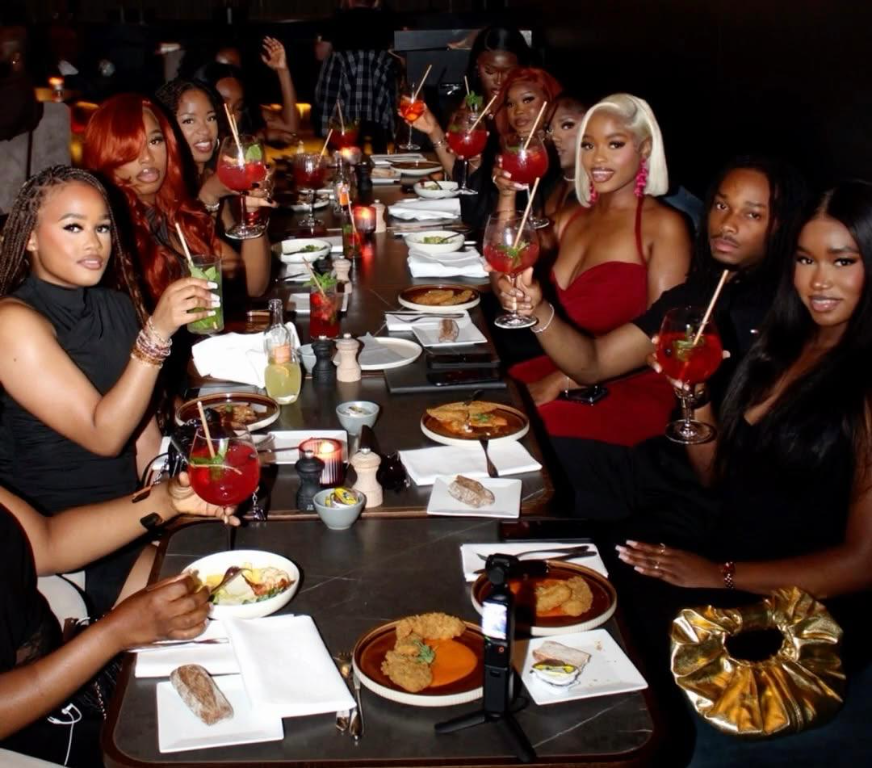

Our story
Made for good food and good company.
A welcoming Freetown kitchen serving Sierra Leonean favourites for relaxed meals, shared moments and good company.

A local table, open to everyone
A welcoming Freetown spot for Sierra Leonean favourites, relaxed meals and good company. Join us to dine in, pick up a meal or plan food for your next gathering.
Explore the menuWhat matters here
Local flavour
Discover the comforting tastes of Sierra Leone in favourites like cassava leaves, potato leaves and krain krain. Rich stews, groundnut flavours, rice dishes and freshly grilled fish bring a satisfying mix of earthy greens, savoury seasoning and food made to share.
Warm welcome
Come as you are and settle in for a relaxed meal with family, friends or fellow food lovers. Whether you are dining in, picking up a favourite or planning a gathering, our aim is to make choosing, sharing and enjoying good food feel easy. Have a question or special request? Get in touch before your visit and we will be happy to help.
Made for sharing
Good food brings people together. Gather around a generous spread of Sierra Leonean stews, rice and grilled favourites for a family meal, lunch with friends or a special celebration. Planning food for a group? Explore our catering service and contact us to discuss your occasion, menu and arrangements.
Meet the people behind the food
A great meal is shaped by the people who prepare it and the people who welcome you. From helping you choose a dish to making sure your meal is ready for the table or pickup, the team is here to make every visit feel easy and enjoyable. Have a question about a dish, a group meal or catering? Get in touch and we’ll be glad to help. We look forward to introducing the team by name as their stories are shared.
Every note and restaurant story should be reviewed and approved before publication.